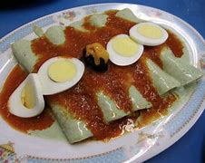
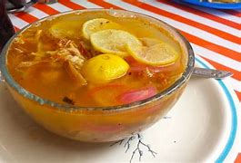

Los
papadzules son un platillo tradicional de origen maya de la Gastronomia
de Yucatan, Campeche y Quintana Roo, en Mexico . El nombre significa,
segun algunos mayas, el alimento del amo (del maya papa, alimento, y
Ts'ul, amo o caballero no perteneciente a la clase popular), o bien
embarrado y remojado (de papak, embarrar, y zul, remojar). Son un
platillo mestizo, con claras influencias indigenas.Es un plato
relativamente sencillo que consiste en tortillas de maiz rellenas de
huevo cocido (a manera de tacos) y con una salsa verde de
pepitas de calabaza y salsa de tomate con chile habanero. Aunque la
receta original no lo incluya pueden adornarse con cebolla morada y
chile habanero picados. Es un guiso comun en los estados de Yucatan,
Campeche y Quintana Roo. Existen platos similares llamados
genericamente "empipianadas" en los estados de Veracruz e Hidalgo.

Sopa de lima
La
sopa de lima es una preparacion culinaria tradicional de la gastronomia
yucateca.Se trata de un caldo ligero de pavo o pollo, aderezado con
diversas especias como el oregano, clavo y comino (entre otras) y
destacandose el uso de una variedad local yucateca de citrico conocido
como lima agria. Se sirve acompañado de tiras de tortilla de maiz frita
y chile habanero. Este platillo es generalmente considerado apto para
la comida o la cena.

Panuchos
El
panucho es un platillo tipico del sur de Mexico, muy popular entre
Campeche y Merida. El panucho tradicional consiste en una tortilla de
maiz a la que se le hace un pequeño corte en la orilla y se rellena de
frijol colado. Hecho esto, se frie en aceite o manteca. Posteriormente
se coloca encima carne de pollo deshebrada, cebolla morada en naranja y
salsa tamulada de chile habanero.